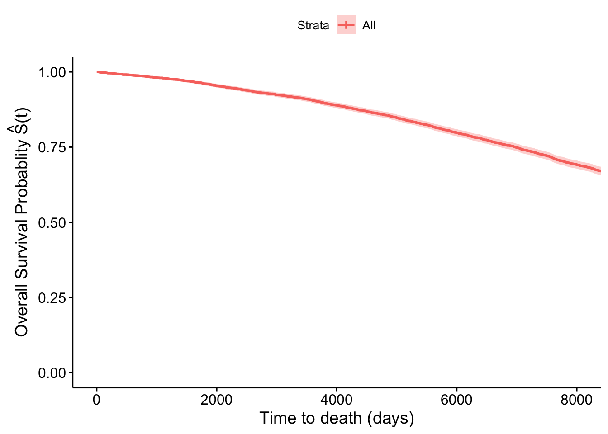
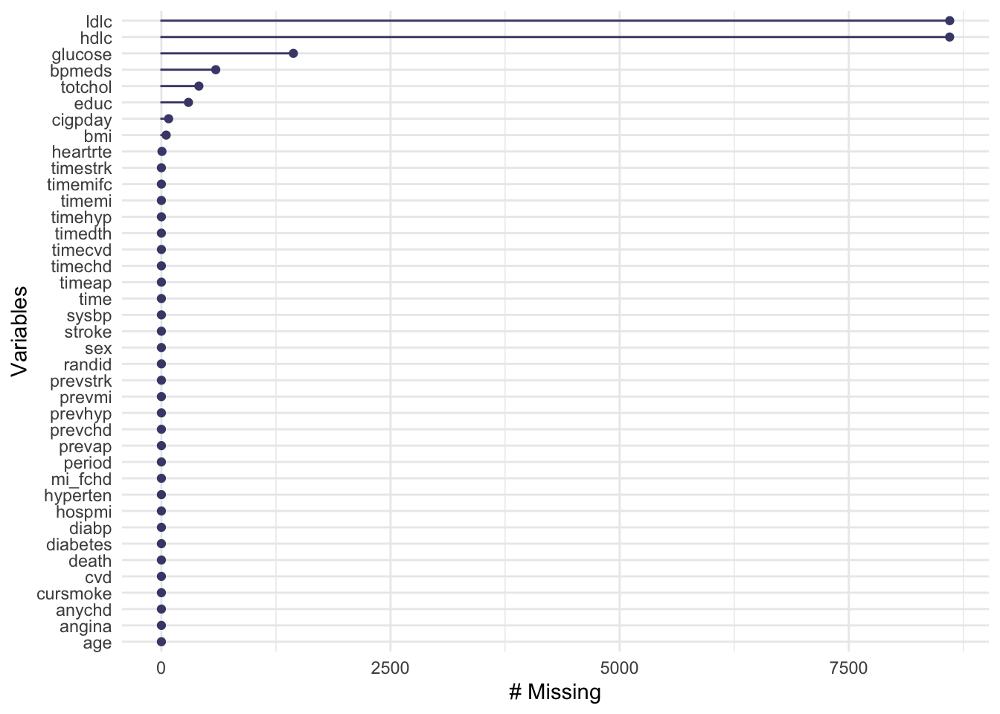
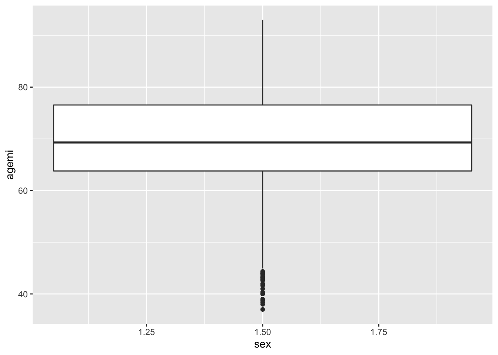
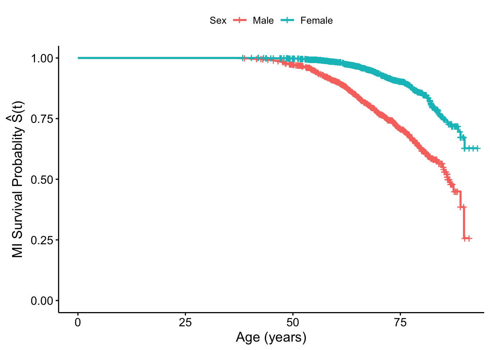
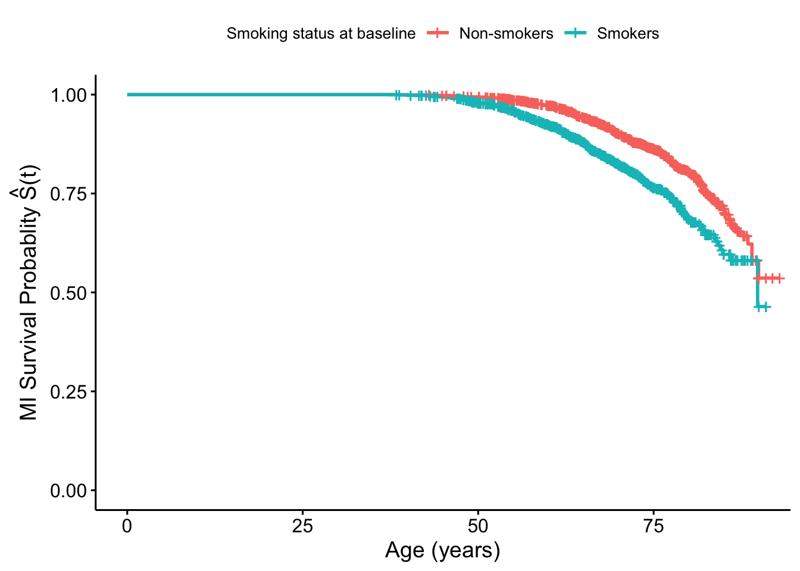

Chapter 7 Longitudinal cohort study designs
The readings for this chapter are
The following are a series of instructional papers on survival analysis, that are meant as general background on how to fit survival analysis models.
Lastly, this article is a good summary for the limitations of Hazards Ratios and offers an alternative survival analysis approach enabling the plotting of adjusted cumulative incidence (and similarly survival rate) curves
- Hernán (2010)
7.1 Longitudinal cohort data
Example datasets are available online, but also made available to you on the course
website. For the Framingham Heart Study the example data are available as the file
“frmgham2.csv”. It is saved in a csv format, and so they can be read into R using the
read_csv function from the readr package (part of the tidyverse). You can use the following code to read in these data, assuming you have saved them in a “data” subdirectory of your current
working directory:
library(tidyverse) # Loads all the tidyverse packages, including readr
fhs <- read_csv("data/frmgham2.csv")
fhs## # A tibble: 11,627 x 39
## RANDID SEX TOTCHOL AGE SYSBP DIABP CURSMOKE CIGPDAY BMI DIABETES BPMEDS
## <dbl> <dbl> <dbl> <dbl> <dbl> <dbl> <dbl> <dbl> <dbl> <dbl> <dbl>
## 1 2448 1 195 39 106 70 0 0 27.0 0 0
## 2 2448 1 209 52 121 66 0 0 NA 0 0
## 3 6238 2 250 46 121 81 0 0 28.7 0 0
## 4 6238 2 260 52 105 69.5 0 0 29.4 0 0
## 5 6238 2 237 58 108 66 0 0 28.5 0 0
## 6 9428 1 245 48 128. 80 1 20 25.3 0 0
## 7 9428 1 283 54 141 89 1 30 25.3 0 0
## 8 10552 2 225 61 150 95 1 30 28.6 0 0
## 9 10552 2 232 67 183 109 1 20 30.2 0 0
## 10 11252 2 285 46 130 84 1 23 23.1 0 0
## # … with 11,617 more rows, and 28 more variables: HEARTRTE <dbl>,
## # GLUCOSE <dbl>, educ <dbl>, PREVCHD <dbl>, PREVAP <dbl>, PREVMI <dbl>,
## # PREVSTRK <dbl>, PREVHYP <dbl>, TIME <dbl>, PERIOD <dbl>, HDLC <dbl>,
## # LDLC <dbl>, DEATH <dbl>, ANGINA <dbl>, HOSPMI <dbl>, MI_FCHD <dbl>,
## # ANYCHD <dbl>, STROKE <dbl>, CVD <dbl>, HYPERTEN <dbl>, TIMEAP <dbl>,
## # TIMEMI <dbl>, TIMEMIFC <dbl>, TIMECHD <dbl>, TIMESTRK <dbl>, TIMECVD <dbl>,
## # TIMEDTH <dbl>, TIMEHYP <dbl>- One important difference compared to a time-series dataset is the
RANDIDvariable. This is the unique identifier for unit for which we have repeated observations for over time. In this case theRANDIDvariable represents a unique identifier for each study participant, with multiple observations (rows) per participant over time. - The
TIMEvariable indicates the number of days that have ellapsed since beginning of follow-up of each observation. (TIME=0for the first observation of each participant). - Number of observations varies between participants (typical)
- The time spacing between observations is not constant. This is because the repeated observations in the Framingham Heart Study are the result of follow-up exams happening 3 to 5 years apart. Many longitudinal cohorts will instead have observations over a fixed time interval (monthly, annual, biannual etc), resulting in a more balanced dataset.
- Observations are given for various risk factors, covariates and cardiovascular outcomes. Some will be invariant for each participant over time (
SEX,educ), while others will vary with each exam.
From a data management perspective, we might want to change all the column names
to be in lowercase, rather than uppercase. This will save our pinkies some
work as we code with the data! You can make that change with the following
code, using the str_to_lower function from the stringr package (part of
the tidyverse):
## # A tibble: 11,627 x 39
## randid sex totchol age sysbp diabp cursmoke cigpday bmi diabetes bpmeds
## <dbl> <dbl> <dbl> <dbl> <dbl> <dbl> <dbl> <dbl> <dbl> <dbl> <dbl>
## 1 2448 1 195 39 106 70 0 0 27.0 0 0
## 2 2448 1 209 52 121 66 0 0 NA 0 0
## 3 6238 2 250 46 121 81 0 0 28.7 0 0
## 4 6238 2 260 52 105 69.5 0 0 29.4 0 0
## 5 6238 2 237 58 108 66 0 0 28.5 0 0
## 6 9428 1 245 48 128. 80 1 20 25.3 0 0
## 7 9428 1 283 54 141 89 1 30 25.3 0 0
## 8 10552 2 225 61 150 95 1 30 28.6 0 0
## 9 10552 2 232 67 183 109 1 20 30.2 0 0
## 10 11252 2 285 46 130 84 1 23 23.1 0 0
## # … with 11,617 more rows, and 28 more variables: heartrte <dbl>,
## # glucose <dbl>, educ <dbl>, prevchd <dbl>, prevap <dbl>, prevmi <dbl>,
## # prevstrk <dbl>, prevhyp <dbl>, time <dbl>, period <dbl>, hdlc <dbl>,
## # ldlc <dbl>, death <dbl>, angina <dbl>, hospmi <dbl>, mi_fchd <dbl>,
## # anychd <dbl>, stroke <dbl>, cvd <dbl>, hyperten <dbl>, timeap <dbl>,
## # timemi <dbl>, timemifc <dbl>, timechd <dbl>, timestrk <dbl>, timecvd <dbl>,
## # timedth <dbl>, timehyp <dbl>Applied exercise: Exploring longitudinal cohort data Read the example cohort data in R and explore it to answer the following questions:
- What is the number of participants and number of observations in the
fhsdataset? - Is there any missingness in the data?
- How many participants die? What is the distribution of age at time of death?
- What is the distribution of age at time of incident MI? Are there differences between males and females? Are there differences in smoking between males and females?
- What is the distribution of BMI among MI cases and non-cases? How about between smokers and non-smokers
Based on this exploratory exercise in this section, talk about the potential for confounding when these data are analyzed to estimate the association between smoking and risk of incident MI.
Applied exercise: Example code
- What is the number of participants and the number of observations in the
fhsdataset? (i.e what is the sample size and number of person-time observations)
In the fhs dataset, the number of participants will be equal to the number of unique ID’s (The RANDID variable which takes a unique value for each participant). We can extract this using the unique function nested within the length function
## [1] 4434If you’d like to use tidyverse tools to answer this question, you can do
that, as well. The pipe operator (%>%) works on any type of object—it will
take your current output and include it as the first parameter value for the
function call you pipe into. If you want to perform operations on a column of
a dataframe, you can use pull to extract it from the dataframe as a vector, and
then pipe that into vector operations:
## [1] 4434It’s entirely a personal choice whether you use the $ operator and “nesting”
of function calls, versus pull and piping to do a series of function calls.
You can see you get the same result, so it just comes down to the style that
you will find easiest to understand when you look at your code later.
The number of person-time observations will actually be equal to the length of the dataset.
The dim function gives us the length (number of rows) and width (number of columns) for a dataframe or any matrix like object in R.
## [1] 11627 39We see that there is approximately an average of 2 to 3 observations per participants.
When you know there are repeated measurements, it can be helpful to explore how much variation there is in the number of observations per study subject. You could do that in this dataset with the following code:
fhs %>%
# Group by the study subject identifier and then count the rows for each
group_by(randid) %>%
count() %>%
# Reorder the dataset so the subjects with the most observations come first
arrange(desc(n)) %>%
head()## # A tibble: 6 x 2
## # Groups: randid [6]
## randid n
## <dbl> <int>
## 1 6238 3
## 2 11252 3
## 3 11263 3
## 4 12806 3
## 5 14367 3
## 6 16365 3You can visualize this, as well. A histogram is one good choice:
fhs %>%
# Group by the study subject identifier and then count the rows for each
group_by(randid) %>%
count() %>%
ggplot(aes(x = n)) +
geom_histogram() All study subjects have between one and three measurements. Most of the study
subjects (over 3,000) have three measurements recorded in the dataset.
All study subjects have between one and three measurements. Most of the study
subjects (over 3,000) have three measurements recorded in the dataset.
- Is there any missingness in the data?
We can check for missingness in a number of ways. There are a couple of great
packages, visdat and naniar, that include functions for investigating
missingness in a dataset. If you don’t have these installed, you can install
them using install.packages("naniar") and install.packages("visdat"). The
naniar package has a vignette with
examples
that is a nice starting point for working with both packages.
The vis_miss function shows missingness in a dataset in a way that lets you
get a top-level snapshot:
## Warning: package 'visdat' was built under R version 4.0.2
Another was to visualize this is with gg_miss_var:
## Warning: package 'naniar' was built under R version 4.0.2## Warning: It is deprecated to specify `guide = FALSE` to remove a guide. Please
## use `guide = "none"` instead.
Many of the variables are available for all observations, with no missingness,
including records of the subject’s ID, measures of death, stroke, CVD, and other
events, age, sex, and BMI. Some of the measured values from visits are missing
occasionally, like the total cholesterol, and glucose. Other measures asked of
the participants (number of cigarettes per day, education) are occasionally
missing. Two of the variables—hdlc and ldlc—are missing more often than
they are available.
You can also do faceting with the gg_miss_var function. For
example, you could see if missingness varies by the period of the observation:
## Warning: It is deprecated to specify `guide = FALSE` to remove a guide. Please
## use `guide = "none"` instead.
You may also want to check if missingness varies with whether an observation was associated with death of the study subject:
## Warning: It is deprecated to specify `guide = FALSE` to remove a guide. Please
## use `guide = "none"` instead.
There are also functions in these packages that allow you to look at how
missingness is related across variables. For example, both glucose and
totchol are continuous variables, and both are occasionally missing. You
can use the geom function geom_miss_point from the naniar package
with a ggplot object to explore patterns of missingness among these two
variables:

The lower left corner shows the observations where both values are missing—it
looks like there aren’t too many. For observations with one missing but not the
other (the points in red along the x- and y-axes), it looks like the distribution
across the non-missing variable is pretty similar to that for observations
with both measurements avaiable. In other words, totchol has a similar
distribution among observations where glucose is available as observations
where glucose is missing.
You can also do things like facet by sex to explore patterns at a finer level:

- How many participants die? What is the distribution of age at time of death?
The death variable in the fhs data is an indicator for mortality if a participant died at any point during follow-up. It is time-invariant taking the value 1 if a participant died at any point or 0 if they were alive at their end of follow-up, so we have to be careful on how to extract the actual number of deaths.
If you arrange by the random ID and look at period and death for each subject,
you can see that the death variable is the same for all periods for each
subject:
## # A tibble: 11,627 x 3
## randid period death
## <dbl> <dbl> <dbl>
## 1 2448 1 0
## 2 2448 3 0
## 3 6238 1 0
## 4 6238 2 0
## 5 6238 3 0
## 6 9428 1 0
## 7 9428 2 0
## 8 10552 1 1
## 9 10552 2 1
## 10 11252 1 0
## # … with 11,617 more rowsWe need to think some about this convention of recording the data when we count the deaths.
It is often useful to extract the first (and sometimes last) observation, in order to assess certain covariate statistics on the individual level. We can create a dataset including only the first (or last) observation per participant from the fhs data using tidyverse tools. The group_by functions groups data by unique values of designated variables (here randid) and the slice function selects rows as designated.
Alternatively you can use the slice_head function, which allows us to slice a designated number of rows beginning from the first observation. Because we are piping this in the group_by function, we will be slicing rows beginning from the first observation for each randid
We can similarly select the last observation for each participant
or using the slice_tail function
In this dataset we can extract statistics on baseline covariates on the individual level, but also assess the number of participants with specific values, including death=1. For example, we can use the sum function in base R, which generates the sum of all values for a given vector. In this case since each death has the value of 1 the sum function will give as the number of deaths in the sample.
## [1] 1550Conversely using tidyverse tools we can extract the number of observations with death=1 using the count function
## # A tibble: 2 x 2
## death n
## <dbl> <int>
## 1 0 2884
## 2 1 1550Note that survival or time-to-event outcomes in longitudinal cohort data will often be time-varying. For example, a variable for mortality will take the value of zero until the person-time observation that represents the time interval that the outcome actually happens in. For outcomes such as mortality this will typically be the last observation. We will construct a variable like this in fhs below.
In order to estimate the distribution of age at death among those participants who died during follow-up we need to create a new age at death variable. The age variable in fhs represents the participants age at each visit. Typically a death would happen between visits so the last recorded value for age would be less than the age at death. We will use the timedth variable to help us determine the actual age at death. The value of timedth is the number of days from beginning of follow-up until death for those with death=1, while it is a fixed value of timedth=8766 (the maximum duration of follow-up) for those with death=0.
We can create a new age at death variable for those with death=1 using the age at baseline and timedth values
fhs_first<-fhs_first %>%
mutate(agedth=age+timedth/365.25,
timedthy=timedth/365.25) ###also creating a year time-to-death variableWe can then get summary statistics on this new variable
fhs_first %>%
summarize(min_agedth = min(agedth),
mean_agedth = mean(agedth),
max_agedth = max(agedth))## # A tibble: 1 x 3
## min_agedth mean_agedth max_agedth
## <dbl> <dbl> <dbl>
## 1 38.4 70.5 93We can also check on these values by groups of interest such as sex
fhs_first %>%
group_by(sex) %>%
summarize(min_agedth = min(agedth),
mean_agedth = mean(agedth),
max_agedth = max(agedth))## `summarise()` ungrouping output (override with `.groups` argument)## # A tibble: 2 x 4
## sex min_agedth mean_agedth max_agedth
## <dbl> <dbl> <dbl> <dbl>
## 1 1 41.6 69.5 91.1
## 2 2 38.4 71.3 93- What is the distribution of age at time of incident MI? Are there differences between males and females? Are there differences in smoking between males and females?
Similar to the question about death (all-cause mortality) we can look at disease incidence, for example myocardial infarction (MI). The fhs dataset has the hospmi variable as an indicator for any participant who had a hospitalization due to MI and timemi gives the number of days from beginning of follow up to the hospitalization due to MI. We can create an age at incident MI hospitalizaton in a similar fashion as the example for age at death.
We can then get summary statistics on this new agemi variable
## # A tibble: 1 x 3
## min_agemi mean_agemi max_agemi
## <dbl> <dbl> <dbl>
## 1 37 69.7 93And by sex
fhs_first %>%
group_by(sex) %>%
summarize(min_agemi = min(agemi),
mean_agemi = mean(agemi),
max_agemi = max(agemi))## `summarise()` ungrouping output (override with `.groups` argument)## # A tibble: 2 x 4
## sex min_agemi mean_agemi max_agemi
## <dbl> <dbl> <dbl> <dbl>
## 1 1 37 68.2 91.1
## 2 2 38.4 70.9 93We can see that the mean age at incident MI hospitalization among males and females is similar, but with males being somewhat younger on average at the time of incident MI. We can take a closer look at the distibution using boxplots:

We see that R didn’t return two separate boxplots by sex, but rather one centered between the two values of sex=1 and sex=2 which are the values for males and females respectively. This is an indicator that the sex variable is of class numeric and is treated as a continuous values rather than categorical. We can verify that this is in fact the case:
## [1] "numeric"We can trasform the variable to one of class factor in order for it to be trated as a cateogrical variable
If we repeat the function for the boxplot now we get separate boxplots by sex

We can once again see from the the boxplots that females tend to be a little older at incidence of MI.
- What is the distribution of BMI among MI cases and non-cases? How about between smokers and non-smokers
Similar to the exercise above we can compare BMI distributions by MI case status.
7.2 Coding a survival analysis
[R package survival]
In the context of survival analysis what is modelled is time to an event (also referred to as survival time or failure time). This is a bit different than the models in the linear or glm family that model an outcome that may follow a gaussian (linear regression), binomial (logistic model) or Poisson distribution. Another difference is that the outcome (time to event) will not be determined in some participants, as they will not have experienced the event of interest during their follow-up. These participants are considered ‘censored’. Censoring can occur in three ways:
- the participant does not experience the event of interest before the study end
- the participant is lost to follow-up before experiencing the event of interest
- the participant experiences a difference event that makes the event of interest impossible (for example if the event of interest is acute MI a participant that dies from a different cause is considered censored)
These are all types of right censoring and in simple survival analysis they are considered to be uninformative (typically not related to exposure). If the censoring is related to the exposure and the outcome then adjustment for censoring has to happen.
Let’s assume that we are interested in all cause mortality as the event of interest let’s denote \(T\) is time to death and \(T\geq 0\). We define the survival function as \(S(t)=Pr[T>t]=1-F(t)\), where the survival function \(S(t)\) is the probability that a participant survives past time \(t\) (\(Pr[T>t]=1\)). \(F(t)\) is the Probability Density Function, (sometimes also denoted as the the Cumulative Incidence Function, \(R(t)\)) or the probability that that an individual will have a survival time less than or equal to t (\([Pr(T≤t)]\))
Time to event \(t\) is bounded by \([0,\infty)\) and \(S(t)\) is non-increasing as \(t\) becomes greater. At \(t=0\), \(S(t)=1\) and conversely as \(t\) approaches \(\infty\), \(S(t)=0\). A property of the survival and probabilty density function is \(S(t) = 1 – F(t)\): the survival function and the probability density function (or cumulative incidence function (\(R(t)\)) sum to 1.
Another useful function is the hazard Function, \(h(t)\), which is the instantaneous potential of experiencing an event at time \(t\), conditional on having survived to that time (\(h(t)=\frac{Pr[t<T\leq t+\Delta t|T>t]}{\Delta t}=\frac{f(t)}{S(t)}\)). The cumulative Hazard Function, \(H(t)\) is defined as the integral of the hazard function from time \(0\) to time \(t\), which equals the area under the curve \(h(t)\) between time \(0\) and time \(t\) (\(H(t)=\int_{0}^{t}h(u)du\)). If we know any of \(S(t)\), \(H(t)\) or \(h(t)\), we can derive the rest based on the following relationships:
\(h(t)=\frac{\partial log(S(t))}{\partial t}\)
\(H(t)=-log(S(t))\) and conversely \(S(t)=exp(-H(t))\)
The survival package in R allows us to fit these types of models, including a very popular model in survival analysis, the Cox proportional hazards model that was also applied in Wong et al. (1989).
Applied exercise: Survival curves and simple survival analysis
1. What does the survival curve for mortality look like with follow-up time as the time scale of interest? How about with age?
2. How do (survival) curves for mortality compare between males and females? How about for MI?
3. What is the Hazard Ratio for smoking and the risk of MI, from a Cox Proportional Hazards model?
1. What does the survival curve for mortality look like with follow-up time as the time scale of interest? How about with age?
A very simple way to estimate survival is the non-parametric Kaplan-Meier estimator.
In R we would estimate Survival \(S(t)\) with all-cause mortality representing failure as follows:
## [1] 8766+ 8766+ 8766+ 2956 8766+ 8766+The numbers assigned to each individual represent their censoring times, with each number with a plus sign indicating that the participant was censored at that times without developing the outcome (haven’t failed/died), while those without the plus sign are the times at which participants developed the outcome (failure/death).
## Warning: package 'survminer' was built under R version 4.0.2## Loading required package: ggpubr## Warning: package 'ggpubr' was built under R version 4.0.2fit_time<- survfit(Surv(timedthy, death) ~ 1, data=fhs_first)
fit_time %>%
ggsurvplot(xlab="Time to death (years)",ylab=expression(paste('Overall Survival Probablity ', hat(S)*"(t)"))) We can see that as follow-up time increases survival decreases rather monotonically over time, or in other words the number of people who have died increases. Survival \(\hat{S}(t)\) drops to about 0.65 at the end of follow-up, or in other words about 35% of participants have died, which is what is expected as we already know that 1550 of 4434 participants have died.
We can see that as follow-up time increases survival decreases rather monotonically over time, or in other words the number of people who have died increases. Survival \(\hat{S}(t)\) drops to about 0.65 at the end of follow-up, or in other words about 35% of participants have died, which is what is expected as we already know that 1550 of 4434 participants have died.
We can repeat this estimation with a different time-scale of interest. Other that follow-up times we may also be interested in Survival and failure (mortality) with respect to age. We repeat the same code only changing the first argument in the Surv function, substituting time of death with respect to follow-up time with age at death.
fit_age<- survfit(Surv(agedth, death) ~ 1, data=fhs_first)
fit_age %>%
ggsurvplot(xlab="Age (years)",ylab=expression(paste('Overall Survival Probablity ', hat(S)*"(t)"))) We see that the shape of this survival curve is different, with virtually no one dying until they reach their 40s, and then a sharper drop in survival as age increases.
We see that the shape of this survival curve is different, with virtually no one dying until they reach their 40s, and then a sharper drop in survival as age increases.
2.How do (survival) curves for mortality compare between males and females? How about for MI?
Kaplan-Meir curves like the above are useful in comparing the survival rate between two groups. For example if we wanted to compare the survival rates between males and females we would fit the same model as above with sex as an independet variable. For all cause mortality:
fit_bysex<-survfit(Surv(timedthy, death) ~ sex, data=fhs_first)
fit_age_bysex<- survfit(Surv(agedth, death) ~ sex, data=fhs_first)
fit_bysex%>%
ggsurvplot(xlab="Time to death (years)",ylab=expression(paste('Overall Survival Probablity ', hat(S)*"(t)")), legend.labs=c("Male","Female"),
legend.title="Sex")fit_age_bysex%>%
ggsurvplot(xlab="Age (years)",ylab=expression(paste('Overall Survival Probablity ', hat(S)*"(t)")), legend.labs=c("Male","Female"),
legend.title="Sex") You can now see that the survival rate for males drops quicker (at a younger age) than for females.
Similarly if we look at MI as the outcome:
You can now see that the survival rate for males drops quicker (at a younger age) than for females.
Similarly if we look at MI as the outcome:
fit_age_MIbysex<-survfit(Surv(agemi, mi_fchd) ~ sex, data=fhs_first )
fit_age_MIbysex %>%
ggsurvplot(xlab="Age (years)",ylab=expression(paste('MI Survival Probablity ', hat(S)*"(t)")), legend.labs=c("Male","Female"),
legend.title="Sex") Once again we see a difference in the survival rates with age by sex, which is in line with what we already know from the literature.
We can actually approach survival rates by smoking status in the same manner:
fit_age_MIsmoking<-survfit(Surv(agemi, mi_fchd) ~ cursmoke, data=fhs_first )
fit_age_MIsmoking %>%
ggsurvplot(xlab="Age (years)",ylab=expression(paste('MI Survival Probablity ', hat(S)*"(t)")), legend.labs=c("Non-smokers", "Smokers"),
legend.title="Smoking status at baseline") Once again we can observe that there is a difference in survival rates for MI, by smoking status at baseline.
The advantages of the Kaplan-Meier estimator for the survival function are its simplicity and the fact that it is a non-paramteric estimator. One limitation of Kaplan-Meier curves is that in this simple form of visualizing a survival rate, we cannot adjust for confounding by other variables, as the survival rates we are plotting here are marginal with respect to everything else. For example we can compare survival rates among smokers and non-smokers, but we can’t really simply plot a sex adjusted survival rate for each, as the baseline rate for males and females will differ. What we can estimate while adjusting for other covariates is a survival time ratio, which is actually estimated using the same model we’ve been fitting. The survreg function in the survival package will fit a failure time model, with time to event as the outcome of interest. Unlike the Kaplan-Meier estimator this will require us to make an assumption about the distribution of time-to-event. Usually time-to-event outcomes are assumed to belong to the exponential, Weibull, log-normal (log(T) is normally distributed) or log-logistic distributions.
The majority of survival analyses for longitudinal cohort data, however has been dominated by the Cox proportional hazards model over the past few decades, and this is the type of model we will focus on here. The main advantage of the Cox proportional hazards model is that we don’t have to make any distributional assumptions about the outcome or residuals. We simply model the instantaneous hazard of the outcome at specific time intervals as a function of covariates of interest, and the assumptions we have to make is that of ‘proportional hazards’. This assumptions stipulates that the hazards across levels of covariates of interest are proportional over time. In other words the ratio of the hazards across levels covariates should be constant over time.
The Cox proportional hazards model in a simple form has this form
\(log(\lambda(t|X))=log(\lambda_{0}(t))+\beta_{1}\times X\)
where \(\lambda(t)\) represents the hazard at time \(t\), \(\lambda_{0}(t)\) is the baseline hazard at time \(t\), and \(\beta_{1}\) is the log hazard for those with \(X=1\) compared to \(X=0\). The baseline hazard \(\lambda_{0}(t)\) is similar to the intercept term in a linear model or glm and is the value of the hazard when all covariates equal 0. However, unlike the intercept term in a linear model or glm, \(\lambda_{0}(t)\) is not estimated by the model. The above model can also be writen as
\(\lambda(t|X)=\lambda_{0}(t)\times e^{\beta_{1}\times X}\)
\(e^{\beta_{1}}\) is the hazard ratio comparing those hose with \(X=1\) and \(X=0\)
Using the fhs data we will fit a simple Cox proportional hazard for the effect of smoking on the hazard for MI.
If we see the estimated parameters of the model, there isn’t an intercept term as we’ve commented above:
## # A tibble: 1 x 5
## term estimate std.error statistic p.value
## <chr> <dbl> <dbl> <dbl> <dbl>
## 1 cursmoke 0.0867 0.0508 1.71 0.0880The parameter for the covariate of interest is equivalent to the log of the hazard ratio comparing current smokers at baseline to non-smokers. We can extract the hazard ratio by exponentiating that parameter.
coxph_mod1 %>%
tidy() %>%
filter(term == "cursmoke") %>%
mutate(hr = exp(estimate),
low_ci = estimate - 1.96 * std.error,
high_ci = estimate + 1.96 * std.error,
low_hr = exp(low_ci),
high_hr = exp(high_ci)) %>%
select(term, hr, low_hr, high_hr)## # A tibble: 1 x 4
## term hr low_hr high_hr
## <chr> <dbl> <dbl> <dbl>
## 1 cursmoke 1.09 0.987 1.20We see that there is modest suggestive HR elevating the hazard for mortality, but the confidence intervals include the null.
We have said that the main assumption we need to make here is that of proportional hazards. The survival package actually allows us to check this with the cox.zph function
The output of this function is the result of a \(\chi^2\) test for the proportional hazards assumption. If the p-value here was below 0.05 we would have to reject the null hypothesis that the proportional hazards assumption holds. We can also plot the parameter(s) of interest across time from this output. If the proportional hazards assumption holds (constant HR) then the parameter should resemble a horizontal line with respect to time.

Here we see that the line is besically horizontal. Now let’s repeat the model adjusting for some covariates, specifically sex and age.
coxph_mod2<-coxph(Surv(timedth, death) ~ cursmoke + sex + age, data=fhs_first)
coxph_mod2 %>%
tidy()## # A tibble: 3 x 5
## term estimate std.error statistic p.value
## <chr> <dbl> <dbl> <dbl> <dbl>
## 1 cursmoke 0.338 0.0535 6.32 2.64e- 10
## 2 sex2 -0.540 0.0525 -10.3 9.35e- 25
## 3 age 0.0967 0.00327 29.6 3.79e-192We can already see that the parameter for smoking is now quite higher, but let’s estimate the HR and 95% CI:
coxph_mod2 %>%
tidy() %>%
filter(term == "cursmoke") %>%
mutate(hr = exp(estimate),
low_ci = estimate - 1.96 * std.error,
high_ci = estimate + 1.96 * std.error,
low_hr = exp(low_ci),
high_hr = exp(high_ci)) %>%
select(term, hr, low_hr, high_hr)## # A tibble: 1 x 4
## term hr low_hr high_hr
## <chr> <dbl> <dbl> <dbl>
## 1 cursmoke 1.40 1.26 1.56The estimated Hazard Ratio is now 1.40 and the 95% CI does not include the null. We can determine that there was some confounding by these variables leading the estimate from the previous model to be biased towards the null. Let’s test the ph assumption for this model.
## chisq df p
## cursmoke 0.373 1 0.541
## sex 3.776 1 0.052
## age 3.046 1 0.081
## GLOBAL 7.747 3 0.052We see that the assumption holds, though the results for the test for both sex and age is close to rejecting the assumption.
Now let’s see what happens if repeat the above model using age as the time-scale of interest in the survival function of the model:
## # A tibble: 2 x 5
## term estimate std.error statistic p.value
## <chr> <dbl> <dbl> <dbl> <dbl>
## 1 cursmoke 0.373 0.0529 7.05 1.73e-12
## 2 sex2 -0.539 0.0526 -10.2 1.46e-24Notice that we did not also include age as an additional parameter in the model, since using it as the time-scale inherently adjusts for it.
coxph_modage1 %>%
tidy() %>%
filter(term == "cursmoke") %>%
mutate(hr = exp(estimate),
low_ci = estimate - 1.96 * std.error,
high_ci = estimate + 1.96 * std.error,
low_hr = exp(low_ci),
high_hr = exp(high_ci)) %>%
select(term, hr, low_hr, high_hr)## # A tibble: 1 x 4
## term hr low_hr high_hr
## <chr> <dbl> <dbl> <dbl>
## 1 cursmoke 1.45 1.31 1.61We also see that the HR is similar as above (slightly higher).
Testing for the proportional hazards assumption in this model:
## chisq df p
## cursmoke 11.637 1 0.00065
## sex 0.657 1 0.41770
## GLOBAL 15.358 2 0.00046Here we see that the assumption fails. If we plot the results of the models we can also see that we no longer have that horizontal line and in the case of smoking, it deviates from the that line significantly.
par(mfrow=c(1,2)) ###graphical parameters to plot two plots side by side (1 row, 2 columns)
plot(phtestage) Note: Variables of interest to continue with:
for mixed models,
Note: Variables of interest to continue with:
for mixed models, sysbp, diabp, totchol compared to cigpday, bmi smoking or not
for long. analysis, timemi and timestrk and hyperten, exposure: cigpday, sysbp, diabp, bmi
7.3 Handling complexity
7.3.1 Multi-level exposure
7.3.2 Recurrent outcome
7.3.3 Time-varying coeffificents
7.3.4 Using survey results
[e.g., NHANES]
References
Andersson, Charlotte, Andrew D Johnson, Emelia J Benjamin, Daniel Levy, and Ramachandran S Vasan. 2019. “70-Year Legacy of the Framingham Heart Study.” Nature Reviews Cardiology, 1.
Bradburn, Michael J, Taane G Clark, Sharon B Love, and Douglas G Altman. 2003a. “Survival Analysis Part Iii: Multivariate Data Analysis–Choosing a Model and Assessing Its Adequacy and Fit.” British Journal of Cancer 89 (4): 605–11.
Bradburn, Michael J, Taane G Clark, Sharon B Love, and Douglas G Altman. 2003b. “Survival Analysis Part Ii: Multivariate Data Analysis–an Introduction to Concepts and Methods.” British Journal of Cancer 89 (3): 431–36.
Clark, Taane G, Michael J Bradburn, Sharon B Love, and Douglas G Altman. 2003. “Survival Analysis Part I: Basic Concepts and First Analyses.” British Journal of Cancer 89 (2): 232–38.
Hernán, Miguel A. 2010. “The Hazards of Hazard Ratios.” Epidemiology (Cambridge, Mass.) 21 (1): 13.
Wong, Nathan D, Adrienne Cupples, Adrian M Ostfeld, Daniel Levy, and William B Kannel. 1989. “Risk Factors for Long-Term Coronary Prognosis After Initial Myocardial Infarction: The Framingham Study.” American Journal of Epidemiology 130 (3): 469–80.